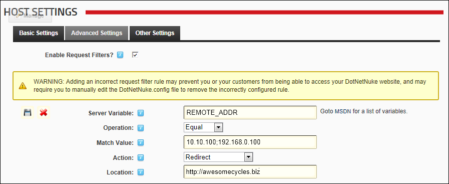
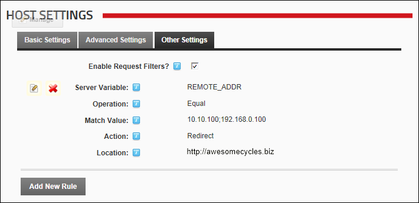

Adding a Request Filter
How to add a request filter to your DotNetNuke installation. For more information, See "Configuring the Request Filter". Note: The following warning message displays when you choose to add a request filter: WARNING: Adding an incorrect request filter rule may prevent you or your customers from being able to access your DotNetNuke website, and may require you to manually edit the DotNetNuke.config file to remove the incorrectly configured rule.
- Navigate to Host >
 Host Settings.
Host Settings.
- Select the Other Settings tab.
- At Enable Request Filters?, .
- Click the Add New Rule link.
- In the Server Variable text box, enter the Server Variable to use when filtering incoming requests. A complete list of valid Server Variables can be viewed by clicking on the MSDN link located to the left of this field.
- At Operation, select the operator to use when comparing the incoming request against the specified server variable and value list from these options: Equal, NotEqual, or Regex.
- In the Match Value text box, enter the value of the servervar that triggers the rule. For a regex rule, the value should be a regular expression that used as a matching expression. If this is not a regex operation, then value can be a semicolon delimited list of values.
- At Action, select the action to perform if the incoming request matches this rule from these options: Redirect, PermanentRedirect, or NotFound.
- In the Location text box, enter the URL to redirect the user if the incoming request matches this rule. This value is only used for Redirect and PermanentRedirect actions.

- Click the Save
 button. This displays the newly saved rule.
button. This displays the newly saved rule.

- Repeat Steps 4-10 to add additional rules.